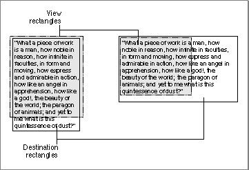
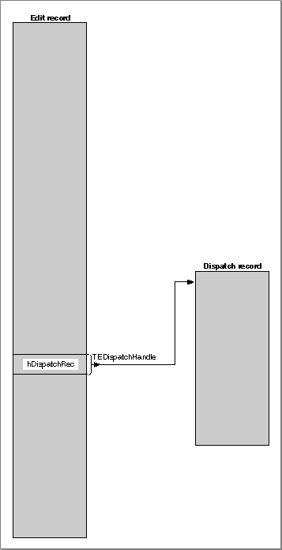
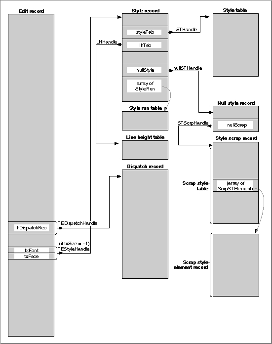

Legacy Document
Important: The information in this document is obsolete and should not be used for new development.
Important: The information in this document is obsolete and should not be used for new development.


An Overview of the TextEdit Data Structures
To edit text on the screen, TextEdit maintains information about where the text is stored, where to display it, and the text style. This information is contained in a record that defines the complete editing environment. You can allocate a monostyled edit record to contain text that is set in a single font, size, and style, or you can allocate a multistyled edit record to contain text with attributes that can vary from character to character.An Overview of the Edit Record
An edit record, which is the primary data structure that TextEdit uses, carries text storage, display, and editing information. When you allocate an edit record, you specify where the text is to be drawn and where it is to be made visible. The destination rectangle is the area in which the text is drawn, and the view rectangle is that portion of the window within which the text is actually displayed. (For a complete discussion of destination and view rectangles, see the QuickDraw chapters in Inside Macintosh: Imaging.) Figure 2-6 shows two sets of destination and view rectangles. The view rectangles are shaded and defined by dotted lines. The text is drawn in the destination rectangle; the part of it that is displayed is defined by the view rectangle.Figure 2-6 Destination and view rectangles
 The edit record includes fields that point to these rectangles. In addition to the two rectangles, the edit record also contains
- a handle to the text to be edited
- the current selection range that determines exactly which characters are to be affected by the next editing operation
- the alignment of the text, as left, right, or center
- for multistyled edit records, a handle to a subsidiary record, the style record, containing the character attributes used to portray the text. This style record, itself, contains subsidiary data structures.
Related Data Structures
Stemming from the main TextEdit edit record, relationships exist among the rest of the TextEdit data structures.When TextEdit creates an edit record, the record contains a field that stores the handle to the dispatch record. The dispatch record is an internal data structure whose fields, referred to as hook fields or hooks, contain the addresses of routines that TextEdit uses internally, for example, to measure and draw text, or to determine a character's position on a line. These routines, called hook routines, determine the way TextEdit behaves. You can use a TextEdit customization routine to replace the address of a default hook routine with the address of your own customized routine. For example, you can provide a routine to be used for word selection that defines word boundaries more precisely for any script system.
When you allocate a monostyled edit record, the edit record, a handle to the text, and a single subsidiary internal data structure, the dispatch record, are created. However, when you allocate a multistyled edit record, a number of additional subsidiary data structures are created to support the text styling capabilities and the display of text in multiple languages.
For a multistyled edit record, the edit record contains a handle to the style record. The style record stores the character attribute information for the text, and contains a handle to the style table, which has one entry for each distinct set of character attributes. Each entry in the style table is a style element record. The style record also contains a style run table, which is an array that gives the start of each style run, and an index into the style table. The style run table array identifies the byte offset of the starting character to which the character attributes, stored in the style table, apply.
The style record contains two other handles: a handle to the line-height table and a handle to the null style record. The line-height table provides vertical spacing and line ascent information for the text to be edited with one element for each line of an edit record. A line number is a direct index into this array. The null style record consists of a reserved field and a handle to the style scrap record.
The style scrap record, which is part of the null scrap, stores character attribute information associated with a null selection to be applied to inserted text. It also holds character attribute information associated with a selected range of multistyled text when the character attributes are to be copied, or the text and its attributes are to be cut
or copied.Part of the style scrap record is the scrap style table which has a separate element for each style run in the style scrap record. The character attribute information for each of these elements is stored in a scrap style element record.
Several TextEdit routines use a text style record to pass character attribute information between the application and the routine.
Figure 2-7 shows the two data structures that TextEdit creates for monostyled text. Figure 2-8 shows the data structures that TextEdit creates for multistyled text and
how they are related; these data structures consist of the two records that TextEdit
also creates for monostyled text plus additional structures needed to store character attribute information. See Figure 2-15 on page 2-61 for a version of the data structures including fields.Figure 2-7 Relationship between the TextEdit data structures for monostyled text

Figure 2-8 Relationships among the TextEdit data structures for multistyled text